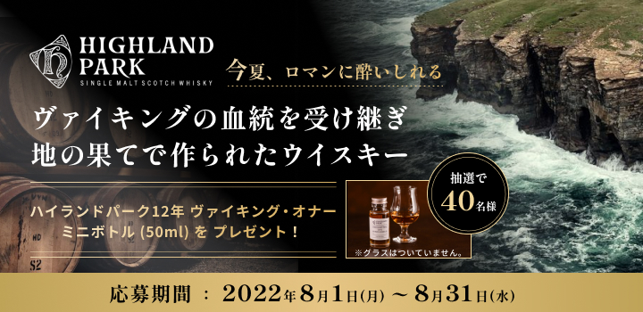
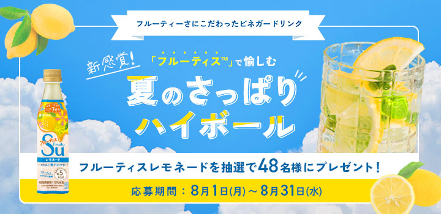

works
-

藤岡行政書士事務所（自主制作）
使用ツール：HTML/SCSSjQueryWordpress
Wordpressを使用してお知らせやコラム機能を実装。顧客に信頼感を持たれるように落ち着いたネイビーをベースにデザイン。制作期間約1ヶ月
http://fujiokaoffice.local/ -

コーポレートサイト（自主制作）
使用ツール：HTML/SCSSjQuery
パララックスやスライドアニメーションの機能を用いて、動きのあるサイトを意識しました。装飾のデザインや配置にもこだわることで、多階層で奥行きのある立体感を感じるサイトを目指しました。
https://namikofujihara.github.io/conslutingLP.github.io/ -
化粧品サイトLP（架空）
使用ツール：HTML/SCSSjQuery
レスポンシブ、jQueryによるハンバーガーメニュー対応。20代〜幅広い女性をターゲットと想定。商品を際立たせるため全体的に淡い色合いに抑え、上品なイメージに仕上げました。制作期間約1ヶ月
https://namikofujihara.github.io/cosme.github.io/ -

ウイスキープレゼントキャンペーンバナー
使用ツール：Figma
スコットランド最北端オークニー島の蒸溜所で作られたというヴァイキングの荒々しさと、ウイスキーという商品そのものの落ち着いた高級感を1つのバナーで表現できるように、フォントやあしらいに統一感を持たせました。
-

ミツカン プレゼントキャンペーンバナー
使用ツール：PhotoshopIllustlator
フォントやあしらいで夏らしさを全面に表現しつつ、見た人を「すっきりしたハイボール飲みたい！」という気分にさせることを目標に制作しました。かつキャンペーンの景品はハイボールでなくフルーツビネガーなので、景品が何なのかわかりやすいように配置を調整しました。
-
Twitter 投稿画像
使用ツール：Photoshop
一目で「有用な情報が載っている」とユーザーに目に留めてもらい、いいねやリツイートに繋げることを目的とし制作。ユーザーが保存して後から見返すことを想定し、１枚で収まるように文字量を調整。高級感とデバイスでの可読性を意識してシンプルなフォント選びやあしらいを意識しました。
-
Instagram 投稿画像
使用ツール：Canva
おすすめのウイスキー情報の投稿用画像を制作。データをお渡しした取引先の担当者が毎月更新していくことを考慮し、どのウイスキーのパッケージにも合うシンプルな背景画像やフォントを選定することを意識しました。
-
ポップアップバナー制作
使用ツール：Photoshop
初来訪ユーザー向けのサイト案内ページへのポップアップバナーを制作。 目に止まりやすく、かつサイトの雰囲気を壊さない高級感を表現できるように落ち着いた赤いカラーをメインに制作しました。
-

LPサイト（自主制作）
使用ツール：HTML/SCSSjQuery
コーディング作業時間短縮を目標とし、時間を意識して18時間程で実装しました。 見やすさと分かりやすさを意識して、色味を抑えたデザインにしました。。
https://namikofujihara.github.io/adcres.github.io//